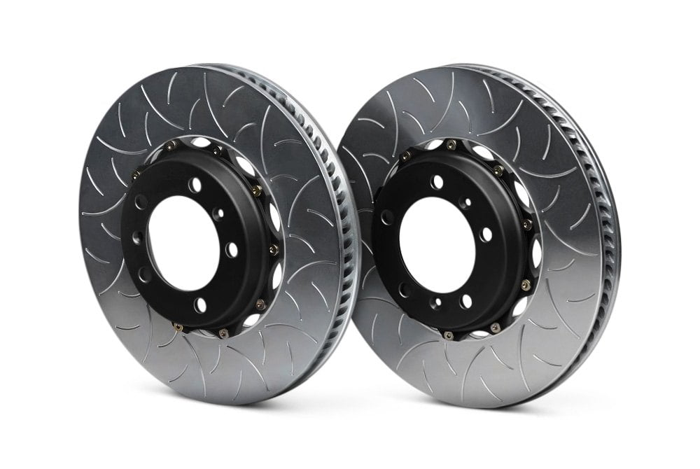

-
I've done some searching, but I keep coming across people going crazy with z32 brakes and whatnot, and since my driver rear caliper is currently sticking on my DD '85T, I need an answer FAST. All I want to do is install the vented rear disc brakes from the '87+ z31s, and I want to know if it is easily done. My research says even the NA cars had vented rears after '87, and that those are better brakes than what my stock Zenki Turbo has. I remember my old '89 NA braking painfully hard, so that's all I need. Even if someone has a link to a forum (That isn't broken, like the ones I found!) I'd be happy with that. I plan to replace the calipers, lines, and rotors no matter what, so now is the time to do this upgrade. Any info you have would be great. I'd guess all I need is the kouki rotors and calipers, but I don't know for sure! Thanks in advance!!!"Understeer is when you hit the wall with the front of the car. Oversteer is when you hit the wall with the rear of the car. Horsepower is how fast you hit the wall. Torque is how far you take the wall with you…"
-'68 Datsun 1600 Roadster
Build Thread: http://community.ratsun.net/topic/21…-build-thread/
-'85 300zx Turbo
Build Thread: http://z31performance.com/showthread…)build-thread! -
You'll need 87+ rear trailing arm assemblies, the hub and caliper ears don't match up if you try to use 87+ rotors and calipers on early ones
They can be made to work as can anything, but if you want simple, just do the swap.... if you get non-turbo arms, you'll have to swap over the axle companion flanges from your zenki arms -
Gah. Of course it wouldn't be simple. If memory serves, the kouki rear trailing arms kick the rear wheels out a bit more, too, right? I don't think it is much, like a half inch or something, right?
I'd do it if someone had a set of trailing arms laying around and the shipping wasn't horrendous, but I doubt that will happen. Those have got to be pretty heavy."Understeer is when you hit the wall with the front of the car. Oversteer is when you hit the wall with the rear of the car. Horsepower is how fast you hit the wall. Torque is how far you take the wall with you…"
-'68 Datsun 1600 Roadster
Build Thread: http://community.ratsun.net/topic/21…-build-thread/
-'85 300zx Turbo
Build Thread: http://z31performance.com/showthread…)build-thread! -
I think I'll stick to the stock stuff. I need this done fairly soon.
Also, thank you very much, G-E!"Understeer is when you hit the wall with the front of the car. Oversteer is when you hit the wall with the rear of the car. Horsepower is how fast you hit the wall. Torque is how far you take the wall with you…"
-'68 Datsun 1600 Roadster
Build Thread: http://community.ratsun.net/topic/21…-build-thread/
-'85 300zx Turbo
Build Thread: http://z31performance.com/showthread…)build-thread! -

Buy 2 part brake discs. You might need to order custom center pieces, but you after that you can use your stock parts.Jukka Kivinen - Europe / Finland - '88 Turbo 2+2 Targa
Datsun Nissan Sports Cars of Finland
http://www.z31turbo.com / http://www.z31na.com -
I Installed 87+ calipers and Jag X Type Rotors on my 85 T Rear arms
Can read all about it here....http://z31performance.com/forum/basi…on-to-your-85t
Its a bit of pissing around.
When i need new rotors I am going to order standard size Race rings and have hats machined up to suit them.85 Turbo Slick Top
__________________________________________________ _____

Copyright © 2006–. All rights reserved. Privacy Policy